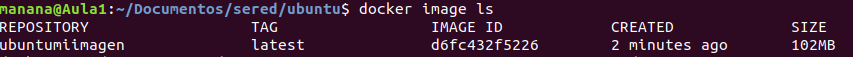
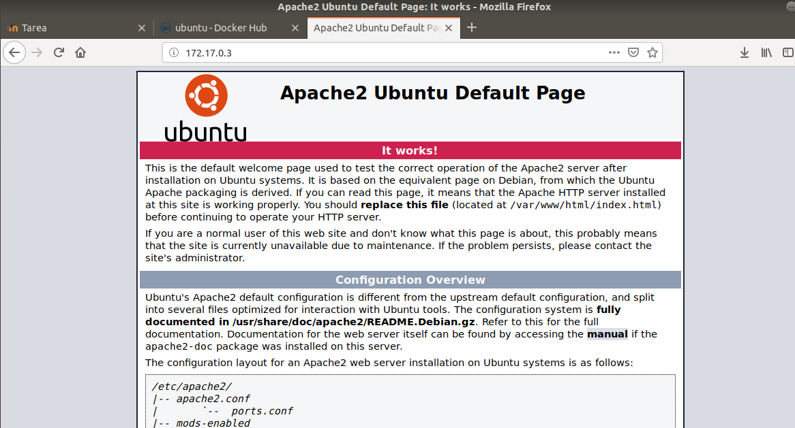
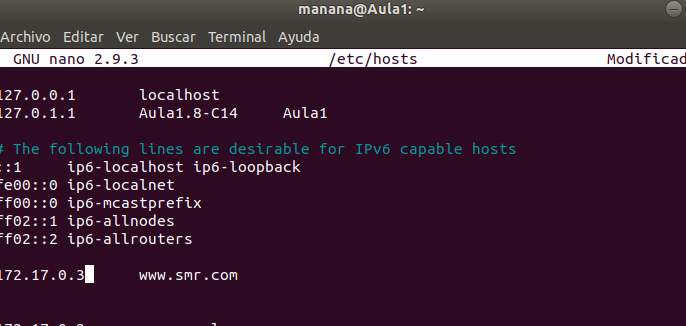
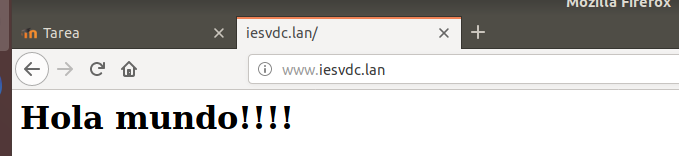

Descargamos estos dos archivos en la pagina https://hub.docker.com/_/ubuntu
Luego en la terminal ejecutamos el comando: docker build -t ubuntumiimagen .

Luego ejecutamos el comando docker image ls para ver que se ha creado la imagen.
Luego ejecutamos el comando docker run -dit --name mi-running-ubuntu2 ubuntumiimagen
Con docker image ls vemos la imagen creada, la mia es ubuntumiimagen y con docker container ls es para ver el contenedor creado que se llama mi-running-ubuntu2.
Para acceder como root ponemos docker exec -ti [Nombre contenedor] bin/bash
Una vez estamos en root lo que hacemos es poner apt update para instalar actualizaciones, y luego una vez hecho eso ponemos apt install apache2 que es para instalar el apache
Luego instalamos el net-tools para las IP y vemos que tenemos la ip 172.17.0.3

En el navegador de interenet ponemos la IP que nos ha dado con el ifconfig en nuestro root y lo ponemos en el navegador y sale lo que se muestra en la imagen

Vamos al archivo index.html y ponemos esto dentro:
Y se verá así
Luego vamos al fichero etc/hosts y ponemos 172.17.0.3 www.smr.com

Luego en el normal ponemos el mismo dichero y ponemos lo mismo.

Y aquí se vé como funciona.
VIRTUAL HOST
En el ordenador anfitrión lo que hacemos es ir al fichero etc/hosts y ahí añadimos 172.17.0.3 www.smr.lan y 172.17.0.3 www.iesvdc.lan
Luego vamos a apache2 luego a sites-available y luego a 000-default.conf y en ese fichero de configuracion donde pone server name ponemos www.smr.lan y en ServerAdmin webmaster@smr.lan
Aquí se ve como funciona.
Luego lo que hacemos es ejecutar el comando cp 000-default.conf 001-default.conf para copiar otro archivo para configurar el otro link
Así tiene que quedar para que funcione y guardamos

Aqui se ve como tambíén funciona.
Luego nos vamos a index.html de nuevo y ponemos el h2 bienvenidos a smr.lan y guardamos
Luego para configurar la otra pagina web con algo diferente lo que hacemos es crear una carpeta para la otra pagina y copiamos el index.html en esa carpeta y accedemos
Luego vamos a sites-available y hacemos a2ensite y hacemos lo de la imagen e paramos apache y lo iniciamos
Aqui se ve como funciona esta
Aquí se ve como funciona la otra también
Al hacer nmap a smr.lan tiene que salir el puerto 80 en el caso que no salga en root tenemos que poner apache2ctl start para que funcione
Luego vamos a etc/apache2/mods-enabled y ahí ponemos a2enmod y luego ponemos a2enmod auth_digest y luego reiniciamos el servicio
Luego vamos a var/www y ahi creamos el usuario poniendo lo que pone en la imagen y de contraseña e puesto usuario
Para que me salga la carpeta password lo que hacemos es utilizar el comando htpasswd -cb ./password usuario1 usuario1
Vamos a etc/apache2/mods-available ahi hacemos el comando a2enmod ssl una vez hecho ese comando hacemos apache2ctl restart para reiniciar apache y se guarde bien la configuración una vez hecho esto vamos a la terminal normal, y hacemos un nmap a www.smr.lan para ver si esta el https abierto y ahí se vé que si.
En apache2 creamos una carpeta llamada ssl con mkdir ssl, luego accedemos a la carpeta y ponemos el comando openssl genrsa -out iesvdc.lan.key 4096 y generamos una clave privada
Luego ponemos el comando openssl req -new -key iesvdc.lan.key -out iesvdc.lan.csr
Y luego vamos rellenando los espacios que nos piden con lo que pone en la imagen
Luego ponemos el comando openssl x509 -req -days 500 -in iesvdc.lan.csr -signkey iesvdc.lan.key -out iesvdc.lan.crt y se crea el certificado
Luego vamos a iesvdc.lan.crt y copiamos eso y lo copiamos en un fichero.
Luego vamos a sites-available y vamos a default-ssl.conf y ahi en serveradmin, server name, documentroot y en sslcertificatefile y sslcertificatekeyfile ponemos lo de la imagen
Luego en sites-available hacemos a2ensite y ponemos * luego reiniciamos apache
luego en preferencias vamos a certificados y ahi vamos a autoridades y le damos a importar y ponemos el certificado hecho antes
Y ahí se ve como funciona
Primero, lo que hacemos es actualizar y instalar squid para ello utilizamos el comando apt update && apt install squid
Luego accedemos a etc/squid
Luego utilizaremos el comando cp para hacer una copia del fichero de configuracion, usando el comando cp squid.conf squid.conf.backup
Luego utilizamos el comando cat squid.conf.backup | grep -v ^# > squid.conf1, después utilizamos el comando awk ‘nf’ squid.conf1 > squid.conf
En el fichero de configuración de squid.conf tenemos que añadir lo de la imagen
Luego iniciamos squid poniendo el comando etc/init.d/squid start
Luego en la configuración en firefox, en proxy ponemos configuración manual y ponemos la ip de root de docker y ponemos usar el mismo docker para todo y aceptamos
como se vé funciona el internet, y para comprobar que no funciona apagamos squid y docker.